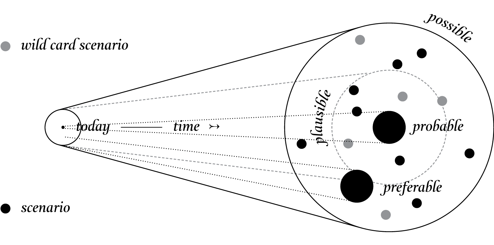

This is a research project, created for the seminar Creative research and speculative
design in HfK Bremen.
Dreams are powerful. They are repositories of our desire. They animate the entertainment industry and drive
consumption. They can blind people to reality and provide cover for political horror. But they can also
inspire us to imagine that things could be radically different than they are today, and then believe we can
progress toward that imaginary world.
BEYOND RADICAL DESIGN?
It is hard to say what today’s dreams are; it seems they have been downgraded to hopes—hope that we will not
allow ourselves to become extinct, hope that we can feed the starving, hope that there will be room for us all
on this tiny planet. There are no more visions. We don’t know how to fix the planet and ensure our survival.
We are just hopeful.
As Fredric Jameson famously remarked, it is now easier for us to imagine the end of the world than an
alternative to capitalism. Yet alternatives are exactly what we need. We need to dream new dreams for the
twenty-first century as those of the twentieth century rapidly fade. But what role can design play?
When people think of design, most believe it is about problem solving. Even the more expressive forms of
design are about solving aesthetic problems. Faced with huge challenges such as overpopulation, water
shortages, and climate change, designers feel an overpowering urge to work together to fix them, as though
they can be broken down, quantified, and solved. Design’s inherent optimism leaves no alternative but it is
becoming clear that many of the challenges we face today are unfixable and that the only way to overcome them
is by changing our values, beliefs, attitudes, and behavior. Although essential most of the time, design’s
inbuilt optimism can greatly complicate things, first, as a form of denial that the problems we face are more
serious than they appear, and second, by channeling energy and resources into fiddling with the world out
there rather than the ideas and attitudes inside our heads that shape the world out there.
Rather than giving up altogether, though, there are other possibilities for design: one is to
use design as a means of speculating how things could be—speculative design. This form of design thrives on
imagination and aims to open up new perspectives on what are sometimes called wicked problems, to create
spaces for discussion and debate about alternative ways of being, and to inspire and encourage people’s
imaginations to flow freely. Design speculations can act as a catalyst for collectively redefining our
relationship to reality.
PROBABLE / PLAUSIBLE / POSSIBLE / PREDERABLE
Being involved with science and technology and working with many technology companies, we regularly encounter
thinking about futures, especially about “The Future.” Usually it is concerned with predicting or forecasting
the future, sometimes it is about new trends and identifying weak signals that can be extrapolated into the
near future, but it is always about trying to pin the future down. This is something we are absolutely not
interested in; when it comes to technology, future predictions have been proven wrong again and again. In our
view, it is a pointless activity.
What we are interested in, though, is the idea of possible futures and using them as tools to better
understand the present and to discuss the kind of future people want, and, of course, ones people do not want.
They usually take the form of scenarios, often starting with a what-if question, and are intended to open up
spaces of debate and discussion; therefore, they are by necessity provocative, intentionally simplified, and
fictional.
Their fictional nature requires viewers to suspend their disbelief and allow their
imaginations to wander, to momentarily forget how things are now, and wonder about how things could be. We
rarely develop scenarios that suggest how things should be because it becomes too didactic and even
moralistic. For us futures are not a destination or something to be strived for but a medium to aid
imaginative thought—to speculate with. Not just about the future but about today as well, and this is where
they become critique, especially when they highlight limitations that can be removed and loosen, even just a
bit, reality’s grip on our imagination.
As all design to some extent is future oriented, we are very interested in positioning design
speculation in relation to futurology, speculative culture including literature and cinema, fine art, and
radical social science concerned with changing reality rather than simply describing it or maintaining it.
This space lies somewhere between reality and the impossible and to operate in it effectively, as a designer,
requires new design roles, contexts, and methods. It relates to ideas about progress—change for the better
but, of course, better means different things to different people.
To find inspiration for speculating through design we need to look beyond design to the
methodological playgrounds of cinema, literature, science, ethics, politics, and art; to explore, hybridize,
borrow, and embrace the many tools available for crafting not only things but also ideas— fictional worlds,
cautionary tales, what-if scenarios, thought experiments, counterfactuals, reductio ad absurdum experiments,
prefigurative futures, and so on.
In 2009, the futurologist Stuart Candy visited the Design Interactions program at the Royal
College of Art and used a fascinating diagram in his presentation to illustrate different kinds of potential
futures.3 It consisted of a number of cones fanning out from the present into the future. Each cone
represented different levels of likelihood. We were very taken by this imperfect but helpful diagram and
adapted it for our own purposes.
The first cone was the probable. This is where most designers operate. It describes what is
likely to happen unless there is some extreme upheaval such as a financial crash, eco disaster, or war. Most
design methods, processes, tools, acknowledged good practice, and even design education are oriented toward
this space. How designs are evaluated is also closely linked to a thorough understanding of probable futures,
although it is rarely expressed in those terms.

PPPP. Illustration by Dunne & Raby.
The next cone describes plausible futures. This is the space of scenario planning and
foresight, the space of what could happen. In the 1970s companies such as Royal Dutch Shell developed
techniques for modeling alternative near-future global situations to ensure that they would survive through a
number of large-scale, global, economic, or political shifts. The space of plausible futures is not about
prediction but exploring alternative economic and political futures to ensure an organization will be prepared
for and thrive in a number of different futures.
The next cone is the possible. The skill here is making links between today’s world and the
suggested one. Michio Kaku’s book Physics of the Impossible sets out three classes of impossibility, and even
in the third, the most extreme—things that are not possible according to our current understanding of
science—there are only two, perpetual motion and precognition, which, based on our current understanding of
science, are impossible. All other changes—political, social, economic, and cultural—are not impossible but it
can be difficult to imagine how we would get from here to there. In the scenarios we develop we believe,
first, they should be scientifically possible, and second, there should be a path from where we are today to
where we are in the scenario. A believable series of events that led to the new situation is necessary, even
if entirely fictional. This allows viewers to relate the scenario to their own world and to use it as an aid
for critical reflection. This is the space of speculative culture—writing, cinema, science fiction, social
fiction, and so on. Although speculative, experts are often consulted when building these scenarios, as David
Kirby points out in a fascinating chapter about distinctions between what he calls speculative scenarios and
fantastic science in his book Lab Coats in Hollywood; the role of the expert is often, not to prevent the
impossible but to make it acceptable.
Beyond this lies the zone of fantasy, an area we have little interest in. Fantasy exists in
its own world, with very few if any links to the world we live in. It is of course valuable, especially as a
form of entertainment, but for us, it is too removed from how the world is. This is the space of fairy tales,
goblins, superheroes, and space opera.
A final cone intersects the probable and plausible. This is the cone of preferable futures. of
course the idea of preferable is not so straightforward; what does preferable mean, for whom, and who decides?
Currently, it is determined by government and industry, and although we play a role as consumers and voters,
it is a limited one. In Imaginary Futures, Richard Barbrook explores futures as tools designed for organizing
and justifying the present in the interests of a powerful minority. But, assuming it is possible to create
more socially constructive imaginary futures, could design help people participate more actively as
citizen-consumers? And if so, how?
This is the bit we are interested in. Not in trying to predict the future but in using
design to open up all sorts of possibilities that can be discussed, debated, and used to collectively define a
preferable future for a given group of people: from companies, to cities, to societies. Designers should not
define futures for everyone else but working with experts, including ethicists, political scientists,
economists, and so on, generate futures that act as catalysts for public debate and discussion about the kinds
of futures people really want.
Design can give experts permission to let their imaginations flow freely, give material
expression to the insights generated, ground these imaginings in everyday situations, and provide platforms
for further collaborative speculation.
We believe that by speculating more, at all levels of society, and exploring alternative
scenarios, reality will become more malleable and, although the future cannot be predicted, we can help set in
place today factors that will increase the probability of more desirable futures happening. And equally,
factors that may lead to undesirable futures can be spotted early on and addressed or at least limited.
BEYOND RADICAL DESIGN?
We have long been inspired by radical architecture and fine art that use speculation for
critical and provocative purposes, particularly projects from the 1960s and 1970s by studios such as
Archigram, Archizoom, Superstudio, Ant Farm, Haus-Rucker-Co, and Walter Pichler.7 But why is this so rare in
design? During the Cold War Modern exhibition at the Victoria and Albert Museum in 2008 we were delighted to
finally see so many projects from this period for real. The exuberant energy and visionary imagination of the
projects in the final room of the exhibition were incredibly inspiring for us. We were left wondering how this
spirit could be reintroduced to contemporary design and how design’s boundaries could be extended beyond the
strictly commercial to embrace the extreme, the imaginative, and the inspiring.
We believe several key changes have happened since the high point of radical design in the
1970s that make imaginative, social, and political speculation today more difficult and less likely. First,
during the 1980s design became hyper-commercialized to such an extent that alternative roles for design were
lost. Socially oriented designers such as Victor Papanek who were celebrated in the 1970s were no longer
regarded as interesting; they were seen as out of sync with design’s potential to generate wealth and to
provide a layer of designer gloss to every aspect of our daily lives. There was some good in this—design was
embraced by big business and entered the mainstream but usually only in the most superficial way. Design
became fully integrated into the neoliberal model of capitalism that emerged during the 1980s, and all other
possibilities for design were soon viewed as economically unviable and therefore irrelevant.
Second, with the fall of the Berlin Wall in 1989 and the end of the Cold War the possibility
of other ways of being and alternative models for society collapsed as well. Market-led capitalism had won and
reality instantly shrank, becoming one dimensional. There were no longer other social or political
possibilities beyond capitalism for design to align itself with. Anything that did not fit was dismissed as
fantasy, as unreal. At that moment, the “real” expanded and swallowed up whole continents of social
imagination marginalizing as fantasy whatever was left. As Margaret Thatcher famously said, “There is no
alternative.”
Third, society has become more atomized. As Zygmunt Bauman writes in Liquid Modernity,8 we
have become a society of individuals. People work where work is available, travel to study, move about more,
and live away from their families. There has been a gradual shift in the United Kingdom from government that
looks after the most vulnerable in society to a small government that places more responsibility on
individuals to manage their own lives. on the one hand this undoubtedly creates freedom and liberation for
those who wish to create new enterprises and projects but it also minimizes the safety net and encourages
everyone to look out for him- or herself. At the same time, the advent of the Internet has allowed people to
connect with similar-minded people all over the world. As we channel energy into making new friends around the
world we no longer need to care about our immediate neighbors. on a more positive note, with this reduction in
top-down governing, there has been a corresponding shift away from the top-down mega-utopias dreamt up by an
elite; today, we can strive for one million tiny utopias each dreamt up by a single person.
Fourth, the downgrading of dreams to hopes once it became clear that the dreams of the
twentieth century were unsustainable, as the world’s population has more than doubled in the last forty-five
years to seven billion. The great modernist social dreams of the post-war era probably reached a peak in the
1970s when it started to become clear that the planet had limited resources and we were using them up fast. As
populations continued to grow at an exponential rate we would have to reconsider the consumer world set in
motion during the 1950s. This feeling has become even more acute with the financial crash and the emergence
since the new millennium of scientific data suggesting that the climate is warming up due to human activity.
Now, a younger generation doesn’t dream, it hopes; it hopes that we will survive, that there will be water for
all, that we will be able to feed everyone, that we will not destroy ourselves.
But we are optimistic. Triggered by the financial crash of 2008, there has been a new wave of
interest in thinking about alternatives to the current system. And although no new forms of capitalism have
emerged yet, there is a growing desire for other ways of managing our economic lives and the relationship
among state, market, citizen, and consumer. This dissatisfaction with existing models coupled with new forms
of bottom-up democracy enhanced by social media make this a perfect time to revisit our social dreams and
ideals and design’s role in facilitating alternative visions rather than defining them. of being a catalyst
rather than a source of visions. It is impossible to continue with the methodology employed by the visionary
designers of the 1960s and 1970s. We live in a very different world now but we can reconnect with that spirit
and develop new methods appropriate for today’s world and once again begin to dream.
But to do this, we need more pluralism in design, not of style but of ideology and values.
Once designers step away from industrial production and the marketplace we enter the
realm of the unreal, the fictional, or what we prefer to think of as conceptual design—design about ideas. It
has a short but rich history and it is a place where many interconnected and not very well understood forms of
design happen—speculative design, critical design, design fiction, design futures, antidesign, radical design,
interrogative design, design for debate, adversarial design, discursive design, futurescaping, and some design
art.